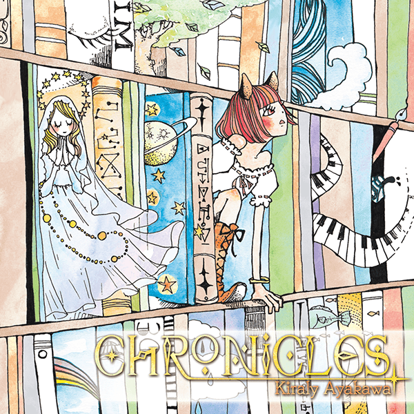

▼タイトル
CHRONICLES (クロニクルズ)
▼ジャケットイラスト
なかはらめぐみ
▼紹介文
幻想的な物語の世界が描かれた本ばかりが詰まった「本棚」をイメージして作り上げられた作品集です。
ゲームの様々なイベントシーンでの使用を想定しています。
※楽曲作品として楽しんでもらうのはもちろんのこと、ゲームや動画などにBGM素材としてご利用いただけます
▼Track List
1.Machina Doll / 機械仕掛けの人形
「セーブ画面や不思議な空間に入った時などでの使用を想定した楽曲です。機械仕掛けのお人形さんがクルクル回り続けているような姿をイメージしています。」
2.Morning Break / 朝のひととき
「朝の目覚めなどの心地良い雰囲気のシーンでの使用を想定した楽曲です。広いお屋敷にある長い食卓を囲んでの爽やかな朝食をイメージしています。」
3.Allegro / アレグロ
「ピンチからの脱却など爽快感のあるシーンでの使用を想定した楽曲です。雲を突き抜けて大空に飛び出すような場面をイメージしています。」
4.Declaration Of War / 開戦宣言
「一気に攻め立てれそうな勢いがありつつも胸にどこか不安が残るような強敵との戦闘前などのシーンでの使用を想定した楽曲です。王国軍VS魔王軍と言った感じの軍勢対軍勢の大規模な戦場をイメージしています。」
5.Regret / 悔恨
「大事な仲間を失ったときなどの哀しみに暮れるシーンでの使用を想定した楽曲です。暗い冷たい海の底にゆっくりと沈んで行くような姿をイメージしています。」
6.Be Proud Of / 誇りに思う
「忠誠を誓った主君との一幕など礼節を感じるシーンでの使用を想定した楽曲です。領主に謁見する騎士が跪き挨拶をする姿をイメージしています。」
7.CHRONICLES / クロニクルズ
「結婚シーンなど幸せが溢れ出るような場面での使用を想定した楽曲です。柔らかな光が射し込み穏やかさに溢れる森の広場のような場所をイメージしています。」
準備中